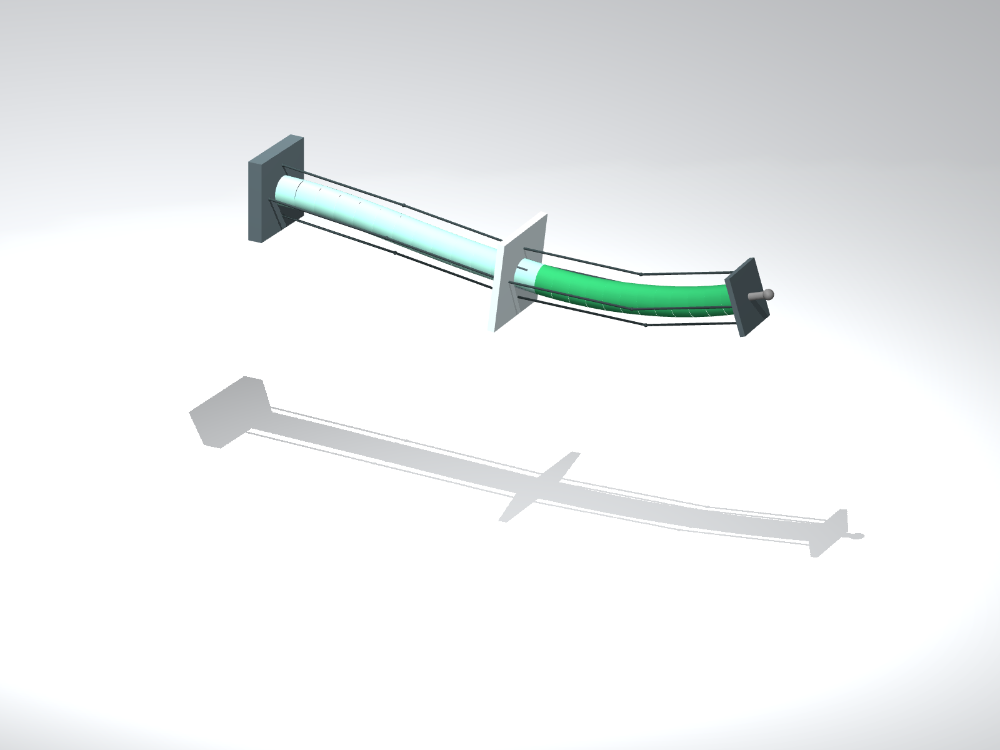
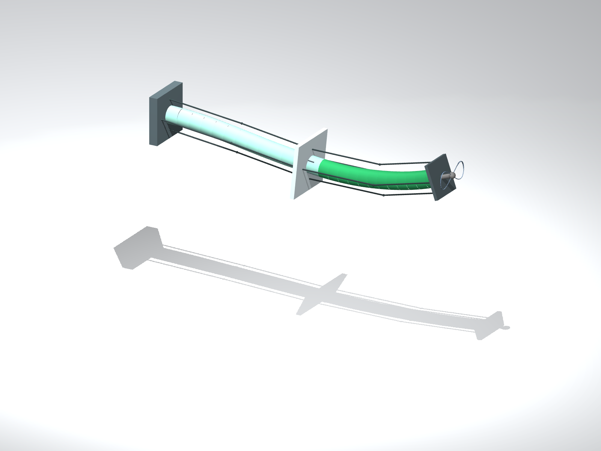
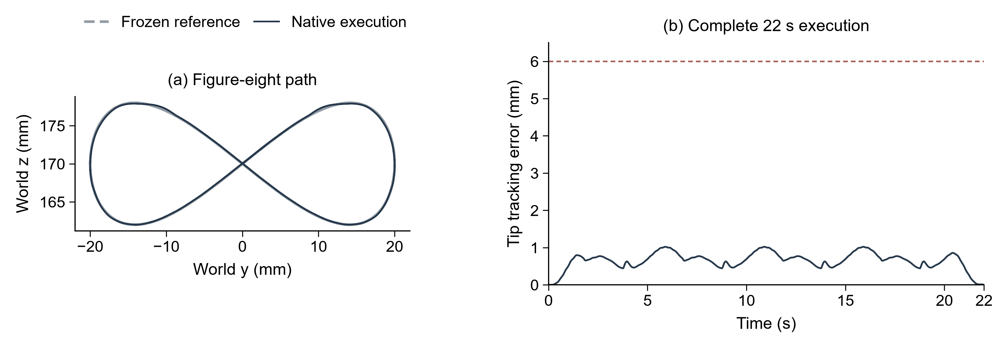
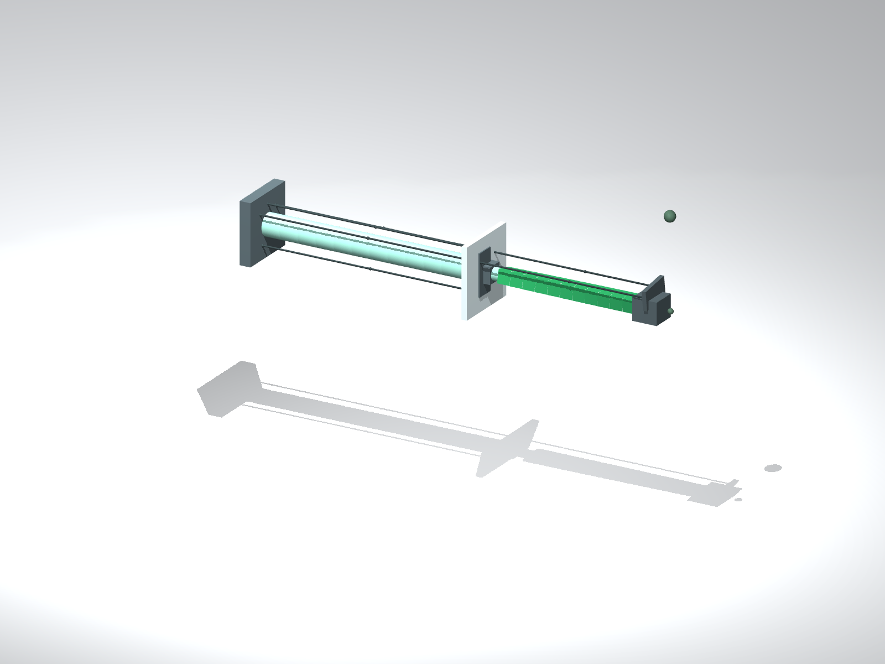
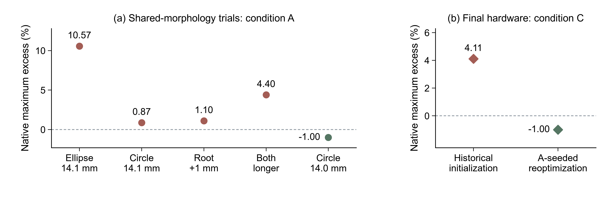
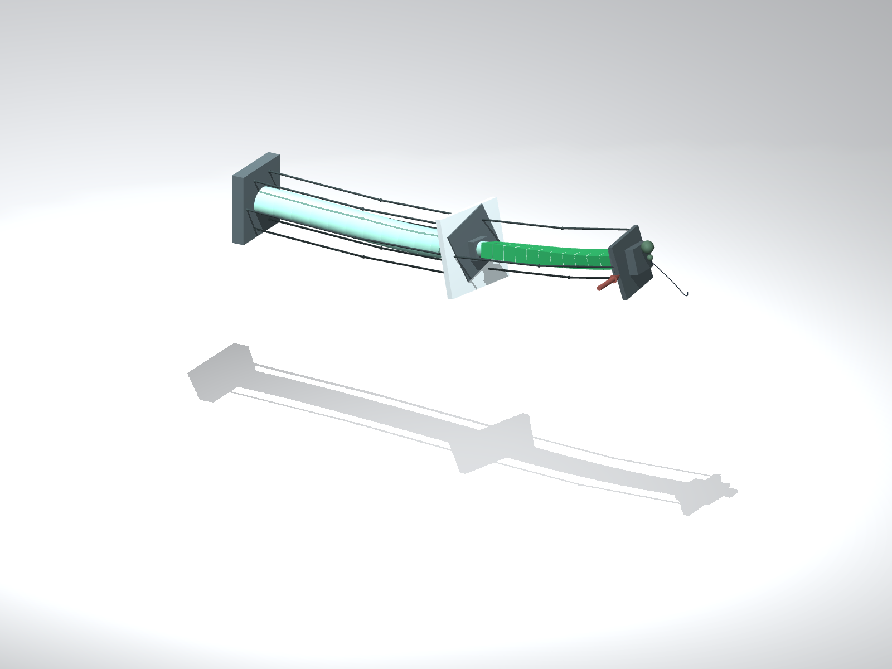
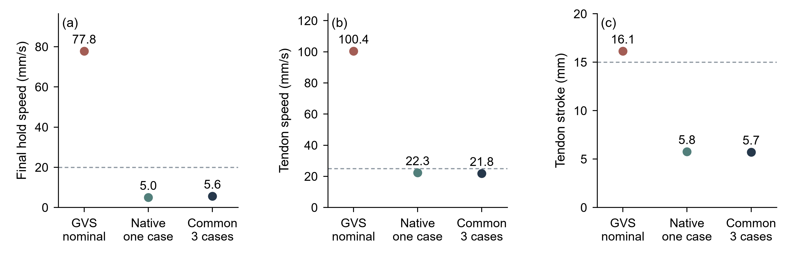

Incomplete GVS delivery → Native reference bank → Feedforward → Complete 22 s acceptance



B-only pass → Shared A/C conflict → Round root and minimum route → Four independent case passes


Startup constraint conflict → Native full-order feedback → Common-recipe correction → Three required cases pass


Archived evidence supports route changes in T04 and T10. T04 switches from an incomplete GVS route to native bank/feedforward execution. T10 retains the same morphology while changing controller construction. Diagnostic values with different protocol scopes are discrete comparisons, not a convergence curve. Final T10 common-recipe cases and frozen-input controls remain separate.